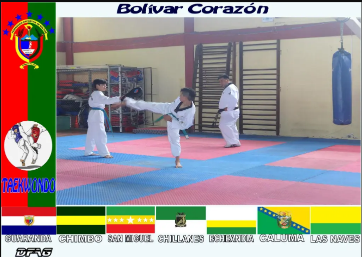

Mi deporte favorito es el Taekwondo, deporte que vengo practicando desde que tenia 9 años,
fui seleccionado de mi cantón para representarlo en los juegos Inter-cantónales luego
provinciales y nacionales, en esta trayectoria o pequeño lapso de mi vida conocí a muchas
personas interesantes de las cuales aprendí mucho, les contare un poco sobre mi deporte favorito:
El Taekwondo es un arte marcial de origen coreano que ha sido instruido en la civilización
asiática durante siglos. Con el tiempo se fue transformando en un moderno deporte, en una
forma o método de bloquear golpes, patear y golpear sin armas. Tae: Pie, patada Kwon: Puño,
bloqueo Do: Camino, arte, método o forma de vida El Taekwondo de hoy se ha desarrollado no
solamente como uno de los métodos más efectivos en defensa personal sin arma, sino en un arte,
un deporte emocionante y un excelente ejercicio para mantenerse en buenas condiciones físicas.
Tanto habilidad como control son requeridas en Taekwondo cuando se utilizan técnicas de ataque y
defensa, lo que convierte al Taekwondo en uno de los deportes más competitivos y emocionantes.
El reto radica en el uso de sus técnicas sin tener ningún contacto con el cuerpo de su oponente;
un control sobre los movimientos de puñetazo y patada es extremamente importante para mantenerse
a pocos centímetros de distancia.